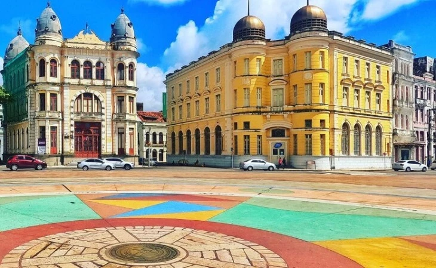

Marco Zero (Recife)
O Marco Zero em Recife é um dos destinos históricos mais importantes do nordeste do país. A região reúne atrações históricas e culturais, centro de artesanato e ótimos restaurantes. Além disso, é o principal local do carnaval de Pernambuco, reunindo música,alegria e muita festa. A seguir, saiba mais detalhes sobre o destino.
Onde fica
O Marco Zero compreende a região da Praça Barão do Rio Branco, que está situada no município de Recife, no estado de Pernambuco. A atração fica próxima do bairro do Recife Antigo, e está a menos de 10 km de Olinda.
Como chegar
Existem muitas formas de chegar ao Marco Zero, uma vez que o local está situado na região Metropolitana de Recife. De carro, basta partir do centro de Recife, através da Rua Riachuelo. O trajeto é curto e dura aproximadamente 20 minutos. Também é possível ir de ônibus, as principais são a 1973, 1992, 1994, 2441, 346, 521 e 642. Além disso, utilizar aplicativos de corrida são ótimas alternativas para andar na cidade.
Por fim, você ainda pode contratar agências de turismo. Assim, é possível aproveitar melhor a região e explorar outras atrações locais.
A história do Marco Zero
O espaço surgiu junto à construção da cidade e também é responsável por preservar grande parte da história local. Pela região, é possível apreciar construções da época do Brasil Colonial, assim como estátuas, parques e monumentos históricos. Na mesma praça também está situada a rosa-dos-ventos do Marco Zero. A atração foi anexada à praça na década de 1930, pelo artista pernambucano Cícero Dias. Uma curiosidade é que o marco reúne todas as distâncias oficiais de Pernambuco, dando origem ao termo ‘km 0’ do estado.